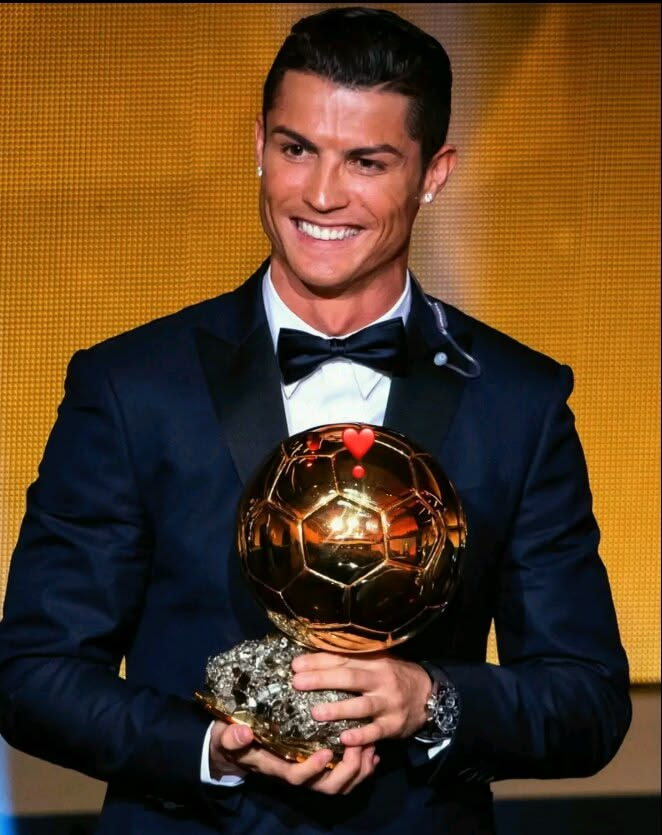
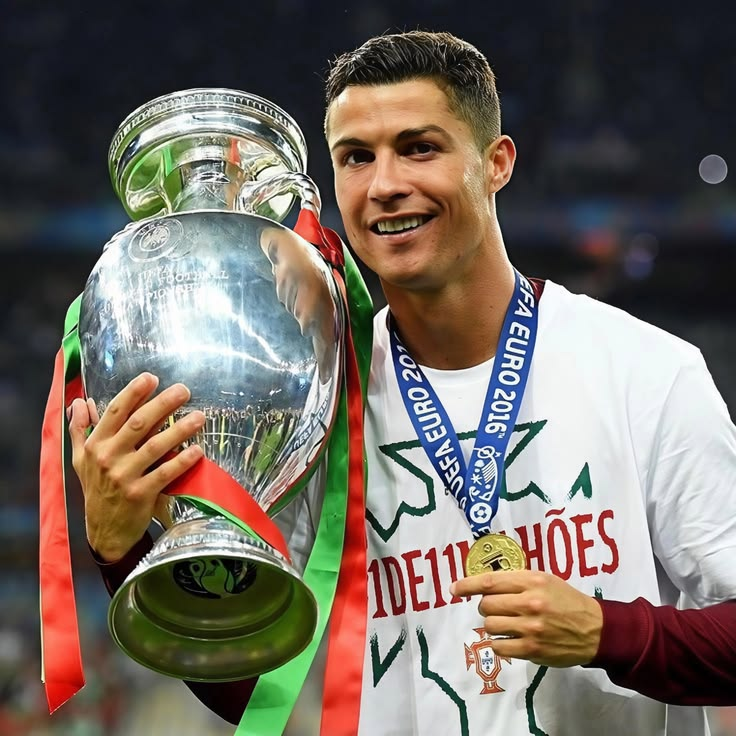
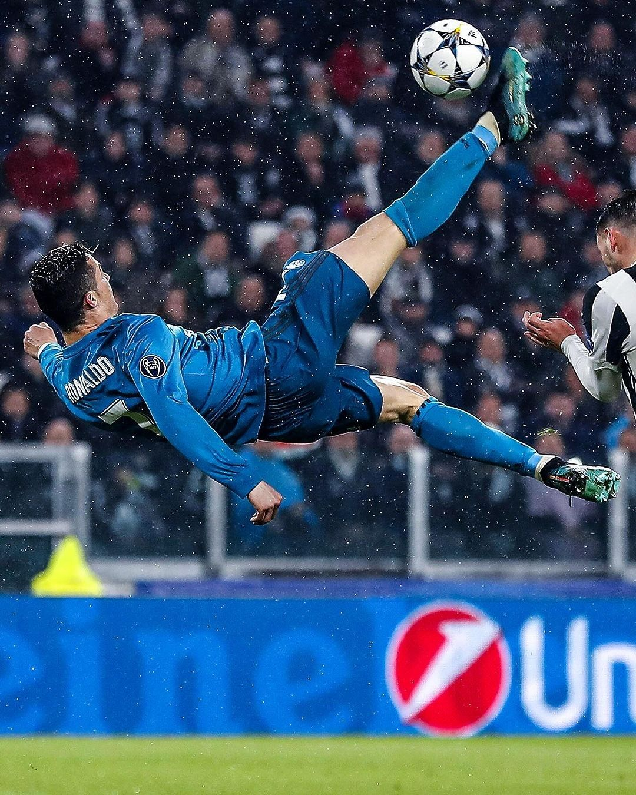
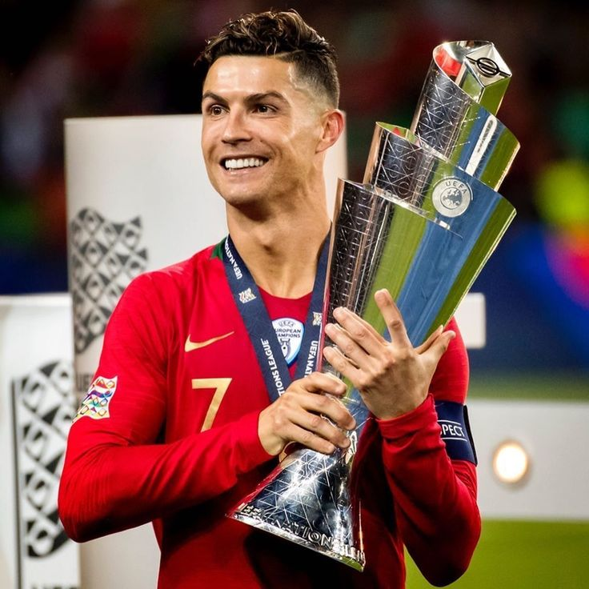
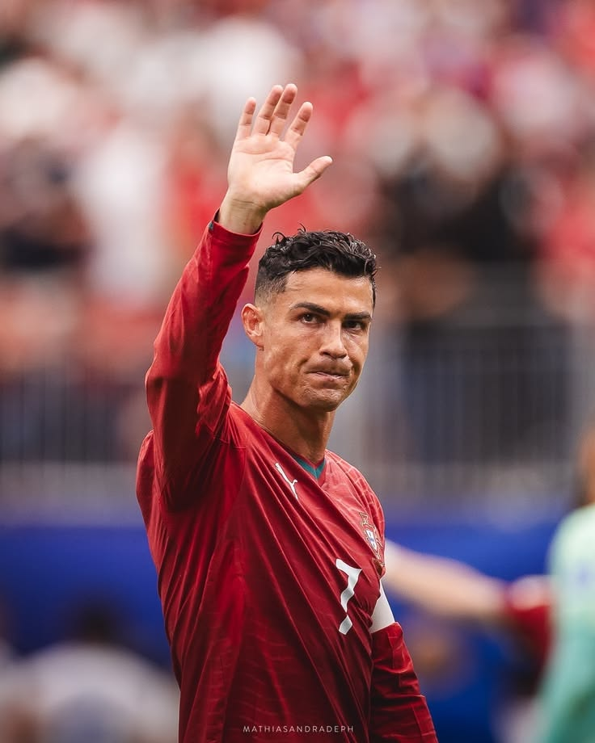

Événements
-
2008 : premier Ballon d'Or

-
10 juillet 2016 : victoire à l'Euro avec le Portugal, en finale contre la France

-
3 avril 2018 : retourné acrobatique contre la Juventus

-
9 juin 2019 : victoire en Ligue des nations

-
5 novembre 2026 : annonce de sa retraite internationale
